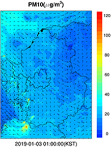

일일 대기질 진단평가 결과 2019년 06월 20일 (목) 경기도보건환경연구원
| 진단평가 결과 | |||||||||
|---|---|---|---|---|---|---|---|---|---|
| 오늘(20일) | PM2.5 | 남부권 | 중부권 | 북부권 | 동부권 | ||||
| PM10 | 남부권 | 중부권 | 북부권 | 동부권 | |||||
| O3 | 남부권 | 중부권 | 북부권 | 동부권 | |||||
| 생활 | 남부권 | 중부권 | 북부권 | 동부권 | |||||
|
[초미세먼지] 중부권과 남부권은 대체로 보통 |
|||||||||
| 내일(21일) | PM2.5 | 남부권 | 중부권 | 북부권 | 동부권 | ||||
| PM10 | 남부권 | 중부권 | 북부권 | 동부권 | |||||
| O3 | 남부권 | 중부권 | 북부권 | 동부권 | |||||
| 생활 | 남부권 | 중부권 | 북부권 | 동부권 | |||||
|
[초미세먼지] 중부권과 남부권은 대체로 보통 |
|||||||||
| 모레(22일) | PM2.5 | 남부권 | 중부권 | 북부권 | 동부권 | ||||
| PM10 | 남부권 | 중부권 | 북부권 | 동부권 | |||||
| O3 | 남부권 | 중부권 | 북부권 | 동부권 | |||||
| 생활 | 남부권 | 중부권 | 북부권 | 동부권 | |||||
|
[초미세먼지] 중부권과 남부권은 대체로 보통 |
|||||||||
권역별 대기질 현황(01~16시 누적평균)
| 구분 | PM2.5(㎍/㎥) | PM10(㎍/㎥) | O3(ppm) | NO2(ppm) |
|---|---|---|---|---|
| 북부권역(01~15시) | 25 | 52 | 0.012 | 0.010 |
| 남부권역(01~15시) | 25 | 52 | 0.012 | 0.010 |
| 동부권역(01~15시) | 25 | 52 | 0.012 | 0.010 |
| 중부권역(01~15시) | 25 | 52 | 0.012 | 0.010 |
시도별 대기질 현황(01~16시 누적평균)
| 구분 | PM2.5(㎍/㎥) | PM10(㎍/㎥) | O3(ppm) | NO2(ppm) |
|---|---|---|---|---|
| 경기도(01~15시) | 25 | 52 | 0.012 | 0.010 |
| 서울특별시(01~15시) | 25 | 52 | 0.012 | 0.010 |
| 인천광역시(01~15시) | 25 | 52 | 0.012 | 0.010 |
| 충청남도(01~15시) | 25 | 52 | 0.012 | 0.010 |
모델결과(3km)
| 구분 | PM2.5 | PM10 | O3 |
|---|---|---|---|
| 오늘 9시 |  | ||
| 오늘 17시 | |||
| 오늘 21시 |